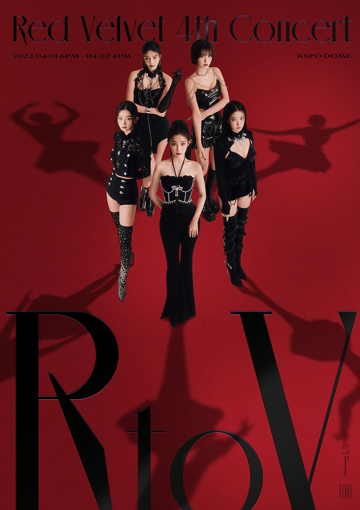
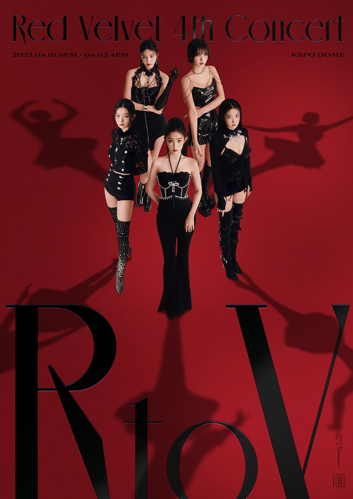

Hello! My name is Alan Perez and I am a fourth year student studying computer science. One of the reasons I am in this class
is to explore how media can be transformed and shaped through the integration of computer science principles.
As a computer science student, I am curious about the potential impact of computers in the design of new media. I look forward to reading more on the subject and creating projects in this class with others.
What would you add to your hierarchy of media or describe as issues that you did not identify in your first assignment?
By viewing other people's answers, I was able to identify some things I did not identify. Some students went as far as to categorize frequently media based on
situation like school - github and canvas. I also see people were really detailed by providing a variety of examples to media categories. Given the oppourtunity to revise my content from assigment one,
I would love to show more media usage and provide a little more in depth examples to showcase the world my media usage and interests. Regarding challenges, a lot of people had some really good thoughts
I overlooked. Some went to categorizing the different challenges based on a particular genre of media. This made it really easy to see identify the issues student's had regarding their specific media. One particular theme
I saw common which was not surprising since we all use it everyday were related to streaming media. I missed to categorize a common media usage in my almost daily rouitine. Given the time to go back, I would add this to my hierachy of media, as
one student mentioned they had difficulty with ads being placed with services one pays a subscription for.
 
